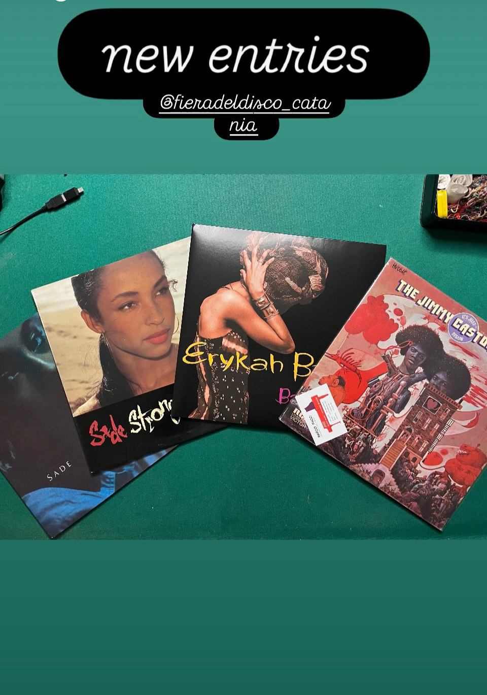

Oggi ho ampliato la mia famiglia di vinili con quattro nuovi ingressi:
- Erykah Badu – Baduizm — #cura per l'anima
- Jimmy Castor – It’s Just Begun — #breakdance #battle of the year
- Sade – Promise — #forza
- Sade – Stronger Than Pride — #forza
Sono andato con alcuni nomi in mente, ma la scelta reale è nata lì: un equilibrio tra budget, disponibilità e l’impatto immediato che certi dischi hanno quando li prendi in mano.
Ho parlato con alcuni rivenditori per future ricerche e ora conosco altre fiere analoghe sparse per l'Italia.
Vibe soul, r&b, funk. Calda e viva.
